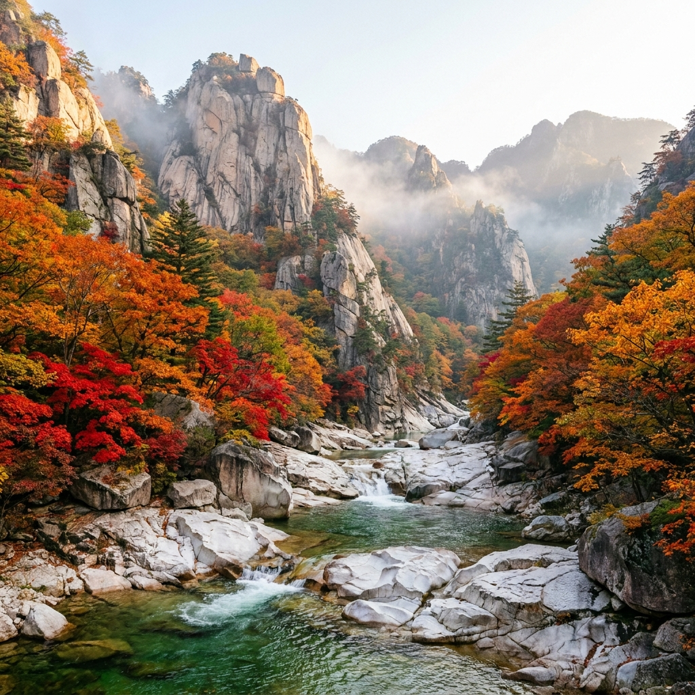
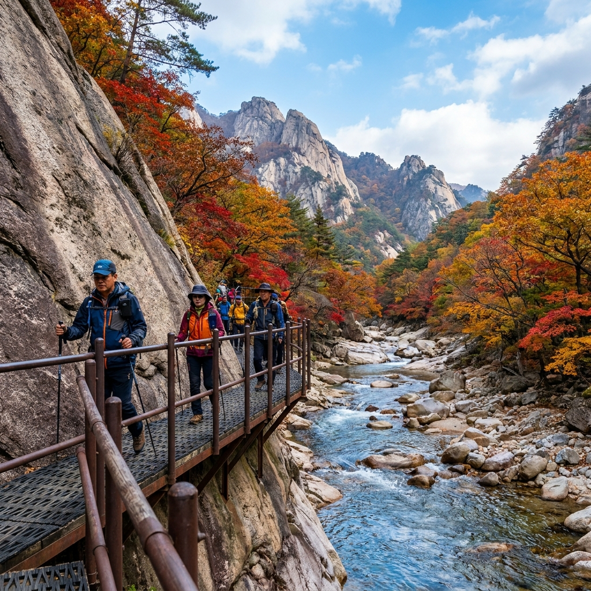
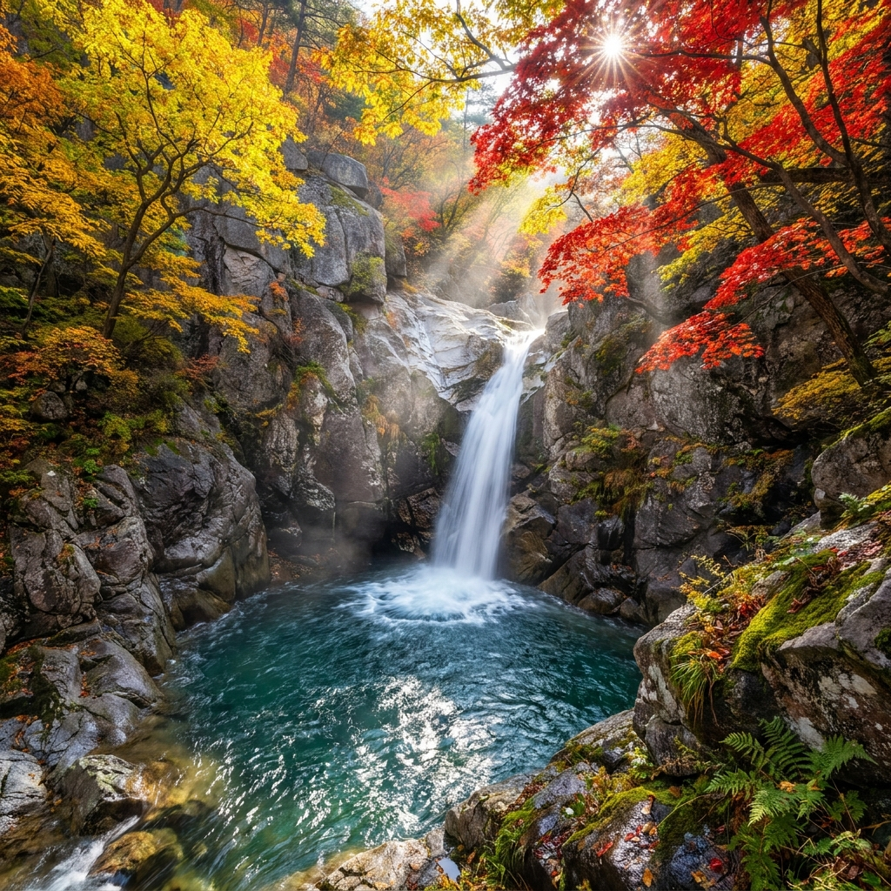

설악산 천불동계곡 단풍 코스 소요시간과 비선대~양폭대피소 난이도 비교 — 흘림골 예약제와 입산 통제 시간 체크리스트
설악산의 수많은 탐방로 중에서도 외설악의 진수로 불리는 천불동계곡은 기암괴석과 맑은 담소, 그리고 타오르는 듯한 붉은 단풍이 어우러져 매년 가을 최고의 절경을 선사합니다. 소공원에서 출발해 와선대, 비선대를 지나 귀면암과 양폭대피소로 이어지는 이 코스는 가을 단풍 산행의 교과서와도 같습니다.
많은 분들이 흘림골처럼 천불동계곡도 사전 예약을 해야 하는지 궁금해하시는데, 천불동계곡은 별도의 탐방 예약 없이 자유롭게 입산할 수 있습니다. 오늘 포스팅에서는 비선대부터 양폭대피소까지 구간별 거리와 소요시간 비교표, 철제 데크 난이도, 소공원 셔틀버스 환승법, 그리고 입산 통제 시간 체크리스트를 완벽하게 정리해 드립니다.

설악산 비선대 암벽 아래 맑은 계곡물과 붉게 타오르는 천불동계곡 가을 단풍 / AI 제작 이미지
01 | 2026 설악산 첫 단풍 현황과 천불동계곡 절정 시기
2026년 가을 설악산의 첫 단풍은 대청봉과 중청 일대에서 9월 28일경 공식 관측되었습니다. 산림청과 기상청의 종합 예측에 따르면, 산 전체의 80% 이상이 물드는 단풍 절정기는 10월 20일 전후부터 10월 말까지 이어질 전망입니다.
천불동계곡은 해발 고도가 약 300m에서 750m 사이에 걸쳐 형성되어 있어, 10월 초순에 대청봉 정상부에서 시작된 단풍이 계곡을 타고 점차 내려오며 10월 중순부터 하순 사이에 가장 눈부신 황금빛과 붉은빛 터널을 만듭니다.
특히 계곡 양옆으로 솟아오른 웅장한 화강암 암봉들과 맑고 투명한 옥빛 소(沼)가 붉은 단풍잎과 강렬한 보색 대비를 이루어, 전국 어느 단풍 명소에서도 찾아보기 힘든 압도적인 장관을 연출합니다.
02 | 천불동계곡 탐방 예약제 여부와 흘림골 예약제와의 차이점
가을철 설악산을 방문할 때 많은 등산객이 가장 헷갈려 하는 부분이 바로 '국립공원 탐방로 예약제'입니다. 결론부터 말씀드리면, 천불동계곡(소공원~비선대~양폭대피소) 일반 탐방로는 사전 예약이 필요 없습니다.
| 구분 |
천불동계곡 코스 |
남설악 흘림골 코스 |
| 탐방 예약 필요 여부 |
사전 예약 불필요 (자율 탐방) |
사전 예약 필수 (국립공원 예약시스템) |
| 일일 입장 정원 |
인원 제한 없음 |
하루 5,000명 한정 |
| 출발 지점 |
설악동 소공원 (속초 방면) |
흘림골 탐방지원센터 (양양 오색 방면) |
| 대피소 숙박 예약 |
양폭대피소 숙박 시 별도 추첨/선착순 예약 |
해당 없음 |
| 코스 성격 |
왕복 계곡 트레킹 (원점회귀 가능) |
편도 종주형 트레킹 (오색 방면 하산) |
💡 핵심 요약: 천불동계곡은 당일 산행 시 예약 없이 정해진 입산 시간 안에 입장하면 누구나 걸을 수 있습니다. 단, 양폭대피소에서 1박을 계획하는 등산객에 한해서만 국립공원공단 예약시스템을 통한 숙박 예약이 필수입니다.
03 | 비선대~귀면암~양폭대피소 구간별 거리와 소요시간 비교표
천불동계곡 단풍 산행은 본인의 체력과 산행 경험에 따라 목적지를 자유롭게 조절할 수 있는 것이 큰 장점입니다. 보통 초보자는 비선대까지 가벼운 트레킹을 즐기고, 중급자는 귀면암 또는 양폭대피소까지 왕복 산행을 진행합니다.
| 구간 |
편도 거리 |
편도 소요시간 |
누적 거리(왕복) |
난이도 |
| 소공원 ~ 신흥사 ~ 비선대 |
3.0 km |
약 50분 ~ 1시간 |
6.0 km |
★☆☆☆☆ (완만한 평지·마차길) |
| 비선대 ~ 귀면암 |
1.5 km |
약 45분 ~ 1시간 |
9.0 km |
★★★☆☆ (돌계단·오르막 데크) |
| 귀면암 ~ 양폭포·천당폭포 |
1.5 km |
약 40분 ~ 50분 |
12.0 km |
★★★☆☆ (철제 난간·완만 협곡) |
| 양폭포 ~ 양폭대피소 |
0.5 km |
약 15분 ~ 20분 |
13.0 km |
★★☆☆☆ (평탄한 계곡길) |
소공원에서 양폭대피소까지는 편도 6.5km, 왕복 13km 코스로 순수 보행 시간만 약 4시간 30분에서 5시간이 소요됩니다. 중간에 단풍 사진 촬영과 휴식, 간식 섭취 시간을 포함하면 총 6~7시간을 넉넉히 잡아야 합니다.
04 | 천불동계곡 구간별 경사도와 바위 데크길 난이도 분석
소공원에서 비선대까지의 3km 구간은 경사도가 거의 없는 넓고 평탄한 산책로입니다. 유모차나 일반 운동화로도 무리 없이 다녀올 수 있어 가벼운 단풍 구경에 제격입니다.
하지만 비선대를 지나 본격적인 천불동계곡으로 접어들면 지형이 완전히 바뀝니다. 거대한 바위와 암반 사이로 철제 계단과 목재 데크가 설치되어 있으며, 바위 틈을 오르내리는 구간이 반복됩니다. 특히 가을철에는 바위 위에 서리가 내리거나 낙엽이 쌓여 미끄럼 사고 위험이 급증하므로 접지력이 우수한 등산화 착용이 필수적입니다.
귀면암 부근의 급경사 계단 구간은 호흡이 가빠질 수 있으나, 난간을 잡고 천천히 오르면 위험 구간마다 안전 펜스가 꼼꼼하게 설치되어 있어 초중급자도 충분히 완주할 수 있습니다.

귀면암 암벽을 따라 설치된 안전 데크길과 계곡을 수놓은 오색 단풍 / AI 제작 이미지
05 | 국립공원 입산 통제 시간과 계절별 하산 마감 기준
국립공원은 탐방객의 조난 예방과 안전을 위해 계절별로 엄격한 '입산 시간 지정제'를 운영하고 있습니다. 천불동계곡 역시 정해진 통제 시간을 넘기면 입산이 불가능합니다.
가을철(하절기 기준 10월 말까지) 소공원 통제소의 입산 가능 시간은 새벽 03:00부터 오후 14:00까지입니다. 비선대 통제소에서 대청봉이나 양폭대피소 방면으로 진입하는 마감 시각은 오후 13:00(동절기 12:00)로 제한됩니다.
가을철 산은 오후 5시만 넘어도 협곡 사이로 해가 급격히 저물며 급격한 기온 강하와 암흑이 찾아옵니다. 따라서 양폭대피소까지 왕복하시려면 늦어도 오전 8시 이전에는 소공원을 출발하셔야 안전하게 일몰 전 하산을 마칠 수 있습니다.
06 | 설악동 소공원 주차장 만차 시 B·C지구 셔틀버스 환승법
단풍 성수기 주말 설악동 소공원 주차장은 새벽 6시 30분이면 이미 만차가 됩니다. 소공원 주차장이 만차되면 도로 입구에서 차량 진입이 전면 차단되므로 억지로 진입하려다 극심한 도로 정체에 갇히게 됩니다.
이때는 망설이지 말고 하류에 위치한 설악동 B지구 또는 C지구 공영주차장에 차를 주차해야 합니다. B·C지구 주차장은 수천 대를 수용할 수 있는 넓은 주차 공간을 갖추고 있습니다.
국립공원공단과 속초시는 단풍철 탐방객을 위해 B·C지구 주차장과 소공원 매표소를 오가는 무료 순환 셔틀버스를 수시로(5~10분 간격) 운행합니다. 주차 후 셔틀버스를 타면 막히는 도로를 전용차로로 빠르게 통과해 소공원 입구까지 10분 만에 도착할 수 있어 시간과 스트레스를 크게 줄일 수 있습니다.

우렁찬 물소리와 함께 쏟아지는 양폭포의 물줄기와 기암괴석 단풍 풍경 / AI 제작 이미지
07 | 속초 시외버스터미널 및 고속버스터미널에서 7번·7-1번 시내버스 타는 법
주말 자가용 운전과 주차 전쟁을 완벽히 피하는 가장 영리한 방법은 대중교통을 이용하는 것입니다. 서울 고속버스터미널이나 동서울터미널에서 속초행 버스를 타면 약 2시간 10분 만에 속초에 도착합니다.
속초 시외버스터미널이나 고속버스터미널 앞 시내버스 정류장에서 7번 또는 7-1번 시내버스를 탑승하면 설악산 소공원 종점까지 환승 없이 한 번에 이동할 수 있습니다.
단풍철 주말에는 7번 계통 버스가 10~15분 간격으로 증차 운행되며, 시내버스 종점이 소공원 매표소 바로 앞이므로 자가용 주차 대기 차량들을 제치고 가장 빠르게 입구에 진입할 수 있습니다.
08 | 양폭대피소 식수 공급 현황과 단풍 산행 비상식량·준비물
천불동계곡 종착지인 양폭대피소는 2층 구조의 현대식 대피소로, 깨끗한 식수를 공급받을 수 있는 음수대가 설치되어 있습니다. 다만 갈수기나 결빙기에는 식수 공급이 제한될 수 있으므로 출발 시 최소 1리터 이상의 식수를 휴대해야 합니다.
대피소 매점에서는 생수, 햇반, 이온음료, 휴대용 부탄가스 등을 판매하지만 성수기에는 조기 품절될 수 있으므로 초콜릿, 견과류, 행동식, 샌드위치 등 개별 비상식량을 미리 배낭에 챙겨가는 것이 좋습니다.
또한 천불동계곡은 해가 지면 체감온도가 영하권 가까이 급락하므로 가벼운 경량 패딩이나 방풍 재킷, 장갑, 보온 모자를 반드시 휴대해야 저체온증을 예방할 수 있습니다.
09 | 가을 설악산 천불동 단풍 당일치기 산행 체크리스트
안전하고 완벽한 천불동계곡 단풍 산행을 위해 출발 전 반드시 점검해야 할 핵심 수칙을 정리해 드립니다.
⏱️ 당일치기 산행 추천 시간표
- 07:30: 설악동 B·C지구 주차 또는 시내버스 도착 후 소공원 입장
- 08:30: 신흥사를 거쳐 비선대 도착 및 가벼운 스트레칭
- 10:00: 귀면암 통과 및 천불동 협곡 단풍 감상
- 11:30: 양폭포·천당폭포 감상 후 양폭대피소 도착 및 점심 식사
- 12:30: 하산 시작 (바위 데크길 낙상 주의)
- 15:30: 소공원 도착 및 귀가 버스/차량 탑승
⚠️ 산행 안전 필수 수칙
1. 등산화 착용 필수: 젖은 낙엽과 바위 계단이 매우 미끄러우므로 일반 운동화는 절대 금물입니다.
2. 스틱과 무릎보호대: 하산 시 긴 계단과 돌길을 내려올 때 무릎 충격을 줄여주는 필수 장비입니다.
3. 헤드랜턴 휴대: 일몰이 빨라지므로 만약의 지체 상황에 대비해 배터리가 완충된 랜턴을 배낭에 넣으세요.
4. 지정 탐방로 준수: 계곡 암벽에 사진을 찍으러 무단 진입하는 행위는 낙석 및 추락의 주원인입니다.
철저한 사전 준비와 여유로운 일정으로 2026년 가을, 설악산 천불동계곡이 선사하는 최고의 단풍 절경을 가슴 깊이 담아보시기 바랍니다.
#설악산단풍
#천불동계곡
#비선대
#양폭대피소
#설악산산행코스
#단풍절정시기
#설악동소공원주차
#설악산셔틀버스
#국립공원입산시간
#가을단풍산행